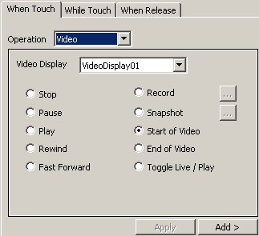

|
|
|
|
|
|
|
|
Use the dialog to set up video operations. Use the Video Display drop-down list to select the Video Display the switch operations will interact with. See Section 19.1.9, Video Controls for more video controls.

Video operations apply only to Switches.

|
Property |
Description |
|
Stop |
The video playing in the Video Display stops. |
|
Pause |
Pauses the live video feed or pauses the video file. |
|
Play |
Plays the video. |
|
Rewind |
The recorded video rewinds. |
|
Fast Forward |
The recorded video fast forwards. |
|
Record |
The Video Display records the live video feed. |
|
Snapshot |
A snapshot is taken of the video in the Video Display. |
|
Start of Video |
The video playback moves to the beginning of the recorded video. |
|
End of Video |
The video playback moves to the end of the recorded video. |
|
Toggle Live / Play |
Toggles the Video Display mode from display live feed to play file or from play file to display live feed. |